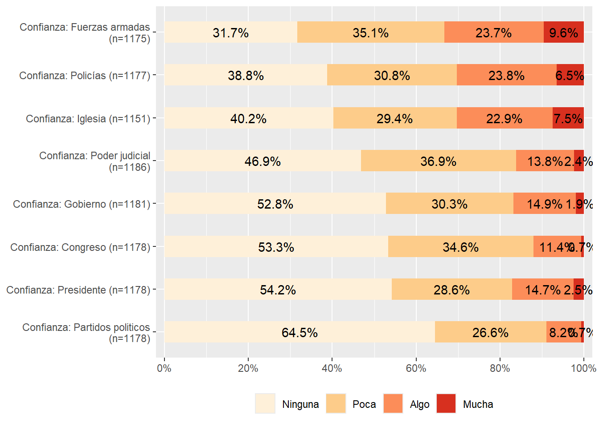
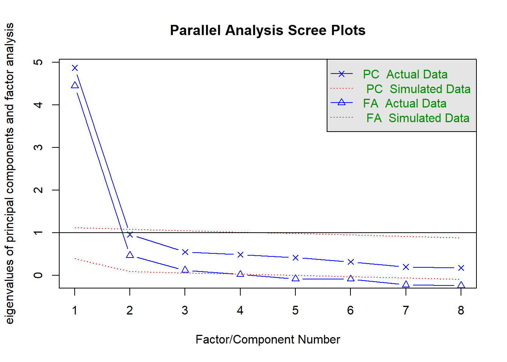
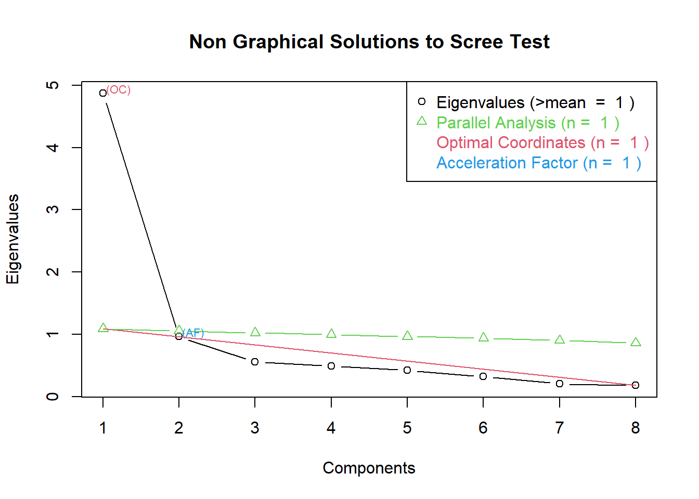

pacman::p_load(dplyr,
ggpubr, #graficos
stargazer, # Reporte
texreg,
ggplot2,
gridExtra, #unir graficos
sjPlot, sjmisc, # reporte y gráficos
sjlabelled, # etiquetas
corrplot, # grafico correlaciones
xtable, # Reporte
summarytools, #reporte
Hmisc, # varias funciones
psych, # fa y principal factors
psy, # scree plot function
nFactors, # parallel
GPArotation) # rotaciónPráctica 4 Correlación y Regresión
Metodología I - Magíster en Ciencias Sociales
Presentación
El informe “Chile: la sombra de Pinochet”, en su medición de febrero de 2023, arrojó que un 36% de los encuestados considera que las Fuerzas Armadas “tenían razón para dar el golpe de Estado”, mientras que un 42% responde que “nunca hay razón”. Fuente: El Mostrador
¿Qué factores podrían influir en que las personas apoyen en mayor medida un gobierno autoritario?
Objetivo de la práctica
El desarrollo de esta guía tiene por objetivo revisar algunos procedimientos para la estimación de correlaciones y regresiones con R, que son necesarios para luego poder analizar e interpretar estas relaciones.
Por temas de orden y reproducibilidad, en este curso hemos separado en dos momentos el trabajo con datos, y dos archivos de código correspondientes:
Preparación: disponible acá.
Análisis: este documento
Librerías y datos
Librerías
Datos
Lectura de datos
load("files/data/latinobarometro_pract4.RData")o directo de la página
load(url("https://github.com/Kevin-carrasco/metod1-MCS/raw/main/files/data/latinobarometro_pract4.RData"))Exploración de datos
Descriptivos
view(dfSummary(proc_data,
plain.ascii = FALSE,
style = "grid",
tmp.img.dir = "/tmp",
graph.magnif = 0.75,
headings = F, # encabezado
varnumbers = F, # num variable
labels.col = T, # etiquetas
na.col = T, # missing
graph.col = F, # plot
valid.col = T, # n valido
col.widths = c(1000,10,10,10,10,10)), method="render")| Variable | Label | Stats / Values | Freqs (% of Valid) | Valid | Missing | ||||||||||||||||||||||||||||||||||||||||||||||
|---|---|---|---|---|---|---|---|---|---|---|---|---|---|---|---|---|---|---|---|---|---|---|---|---|---|---|---|---|---|---|---|---|---|---|---|---|---|---|---|---|---|---|---|---|---|---|---|---|---|---|---|
| apoyo_autoritarismo [numeric] |
|
|
1103 (91.9%) | 97 (8.1%) | |||||||||||||||||||||||||||||||||||||||||||||||
| conf_fa [numeric] | Confianza: Fuerzas armadas |
|
|
1175 (97.9%) | 25 (2.1%) | ||||||||||||||||||||||||||||||||||||||||||||||
| conf_pol [numeric] | Confianza: Policías |
|
|
1177 (98.1%) | 23 (1.9%) | ||||||||||||||||||||||||||||||||||||||||||||||
| conf_iglesia [numeric] | Confianza: Iglesia |
|
|
1151 (95.9%) | 49 (4.1%) | ||||||||||||||||||||||||||||||||||||||||||||||
| conf_cong [numeric] | Confianza: Congreso |
|
|
1178 (98.2%) | 22 (1.8%) | ||||||||||||||||||||||||||||||||||||||||||||||
| conf_gob [numeric] | Confianza: Gobierno |
|
|
1181 (98.4%) | 19 (1.6%) | ||||||||||||||||||||||||||||||||||||||||||||||
| conf_jud [numeric] | Confianza: Poder judicial |
|
|
1186 (98.8%) | 14 (1.2%) | ||||||||||||||||||||||||||||||||||||||||||||||
| conf_partpol [numeric] | Confianza: Partidos politicos |
|
|
1178 (98.2%) | 22 (1.8%) | ||||||||||||||||||||||||||||||||||||||||||||||
| conf_presi [numeric] | Confianza: Presidente |
|
|
1178 (98.2%) | 22 (1.8%) | ||||||||||||||||||||||||||||||||||||||||||||||
| reeduc_1 [numeric] |
|
|
1200 (100.0%) | 0 (0.0%) | |||||||||||||||||||||||||||||||||||||||||||||||
| sexo [numeric] | Sexo |
|
|
1200 (100.0%) | 0 (0.0%) | ||||||||||||||||||||||||||||||||||||||||||||||
| edad [numeric] | Edad |
|
69 distinct values | 1200 (100.0%) | 0 (0.0%) | ||||||||||||||||||||||||||||||||||||||||||||||
| idenpa [numeric] | 1 distinct value |
|
1200 (100.0%) | 0 (0.0%) | |||||||||||||||||||||||||||||||||||||||||||||||
| educacion [character] | Educación |
|
|
1200 (100.0%) | 0 (0.0%) |
Generated by summarytools 1.0.1 (R version 4.2.2)
2023-06-23
proc_data %>%
select(conf_fa, conf_pol, conf_iglesia, conf_gob, conf_cong, conf_jud, conf_partpol, conf_presi) %>%
plot_stackfrq(sort.frq = "first.desc", geom.colors = "OrRd") + theme(legend.position="bottom")
Análisis de correlaciones
corMat <- proc_data %>%
select(conf_fa, conf_pol, conf_iglesia, conf_gob, conf_cong, conf_jud, conf_partpol, conf_presi) %>%
cor(use = "complete.obs") # estimar matriz pearson
options(digits=2)
corMat conf_fa conf_pol conf_iglesia conf_gob conf_cong conf_jud
conf_fa 1.00 0.79 0.51 0.60 0.44 0.49
conf_pol 0.79 1.00 0.58 0.64 0.46 0.50
conf_iglesia 0.51 0.58 1.00 0.57 0.49 0.43
conf_gob 0.60 0.64 0.57 1.00 0.65 0.60
conf_cong 0.44 0.46 0.49 0.65 1.00 0.53
conf_jud 0.49 0.50 0.43 0.60 0.53 1.00
conf_partpol 0.34 0.37 0.42 0.58 0.67 0.55
conf_presi 0.60 0.63 0.54 0.80 0.55 0.52
conf_partpol conf_presi
conf_fa 0.34 0.60
conf_pol 0.37 0.63
conf_iglesia 0.42 0.54
conf_gob 0.58 0.80
conf_cong 0.67 0.55
conf_jud 0.55 0.52
conf_partpol 1.00 0.52
conf_presi 0.52 1.00Reporte en tabla
proc_data %>%
select(conf_fa, conf_pol, conf_iglesia, conf_gob, conf_cong, conf_jud, conf_partpol, conf_presi) %>%
tab_corr(triangle = "lower")| Confianza: Fuerzas armadas | Confianza: Policías | Confianza: Iglesia | Confianza: Gobierno | Confianza: Congreso | Confianza: Poder judicial | Confianza: Partidos politicos | Confianza: Presidente | |
|---|---|---|---|---|---|---|---|---|
| Confianza: Fuerzas armadas | ||||||||
| Confianza: Policías | 0.790*** | |||||||
| Confianza: Iglesia | 0.512*** | 0.580*** | ||||||
| Confianza: Gobierno | 0.599*** | 0.641*** | 0.571*** | |||||
| Confianza: Congreso | 0.437*** | 0.464*** | 0.495*** | 0.652*** | ||||
| Confianza: Poder judicial | 0.492*** | 0.503*** | 0.431*** | 0.600*** | 0.535*** | |||
| Confianza: Partidos politicos | 0.335*** | 0.373*** | 0.422*** | 0.576*** | 0.670*** | 0.552*** | ||
| Confianza: Presidente | 0.597*** | 0.634*** | 0.538*** | 0.801*** | 0.547*** | 0.524*** | 0.520*** | |
| Computed correlation used pearson-method with listwise-deletion. | ||||||||
Reporte en gráfico
corrplot(corMat, type="lower")
Reporte en gráfico (mejor)
M=corMat
diag(M) = NA
rownames(M) <- c("A. Confianza: Fuerzas armadas",
"B. Confianza: Policías",
"C. Confianza: Iglesia",
"D. Confianza: Gobierno",
"E. Confianza: Congreso",
"F. Confianza: Poder judicial",
"G. Confianza: Part. políticos",
"H. Confianza: Presidente")
colnames(M) <-c("(A)", "(B)","(C)", "(D)", "(E)", "(F)", "(G)", "(H)")
corrplot::corrplot(M,
method = "color",
addCoef.col = "#000390",
type = "upper",
tl.col = "black",
col=colorRampPalette(c("white","#0068DC"))(12),
bg = "white",
na.label = "-")
Análisis factorial exploratorio
¿Qué se puede deducir de la matriz de correlaciones en relación a la estructura subyacente en términos de variables latentes? No hay claridad de grupos de indicadores asociados entre sí.
Test de adecuación de matriz para AFE
KMO (Kaiser, Meyer, Olkin Measure of Sampling Adequacy):
Varía entre 0 y 1. Contrasta si las correlaciones parciales entre las variables son pequeñas
Valores pequeños (menores a 0.5) indican que los datos no serían adecuados para AFE, ya que las correlaciones entre pares de variables no pueden ser explicadas por otras variables.
KMO(corMat)Kaiser-Meyer-Olkin factor adequacy
Call: KMO(r = corMat)
Overall MSA = 0.88
MSA for each item =
conf_fa conf_pol conf_iglesia conf_gob conf_cong conf_jud
0.85 0.85 0.96 0.87 0.89 0.94
conf_partpol conf_presi
0.87 0.88 En este caso las correlaciones son altas, por lo que los datos sí son adecuados para AFE.
Nivel de correlaciones de la matriz: test de esfericidad de Barlett
Se utiliza para evluar la hipótesis que la matriz de correlaciones es una matriz identidad (diagonal 1 y bajo la diagonal 0)
- Se busca significación (p < 0.05) ya que se espera que las variables estén correlacionadas
cortest.bartlett(corMat, n = 1200)$chisq
[1] 6064
$p.value
[1] 0
$df
[1] 28En este caso el valor p es 0, así que hay significación estadística
Selección de número de factores
confianza <- proc_data %>%
select(conf_fa, conf_pol, conf_iglesia, conf_gob, conf_cong, conf_jud, conf_partpol, conf_presi)
scree.plot(confianza)
fa.parallel(corMat, n.obs=1200)
Parallel analysis suggests that the number of factors = 3 and the number of components = 1 library(nFactors)
ev <- eigen(corMat) # get eigenvalues
ap <- parallel(subject=1200,var=8,
rep=100,cent=.05)
nS <- nScree(x=ev$values, aparallel=ap$eigen$qevpea)
plotnScree(nS)
Extracción
ejes principales
fac_pa <- fa(r = confianza, nfactors = 3, fm= "pa")maximum iteration exceeded#summary(fac_pa)
fac_paFactor Analysis using method = pa
Call: fa(r = confianza, nfactors = 3, fm = "pa")
Standardized loadings (pattern matrix) based upon correlation matrix
PA1 PA3 PA2 h2 u2 com
conf_fa 0.83 0.03 -0.01 0.72 0.280 1.0
conf_pol 0.94 -0.02 0.00 0.87 0.134 1.0
conf_iglesia 0.39 0.18 0.18 0.43 0.565 1.9
conf_gob -0.04 1.01 0.00 0.97 0.035 1.0
conf_cong 0.09 0.14 0.63 0.63 0.373 1.1
conf_jud 0.24 0.11 0.45 0.49 0.511 1.7
conf_partpol -0.05 -0.04 0.93 0.78 0.222 1.0
conf_presi 0.20 0.63 0.05 0.69 0.315 1.2
PA1 PA3 PA2
SS loadings 2.09 1.75 1.72
Proportion Var 0.26 0.22 0.22
Cumulative Var 0.26 0.48 0.70
Proportion Explained 0.38 0.31 0.31
Cumulative Proportion 0.38 0.69 1.00
With factor correlations of
PA1 PA3 PA2
PA1 1.00 0.72 0.51
PA3 0.72 1.00 0.71
PA2 0.51 0.71 1.00
Mean item complexity = 1.2
Test of the hypothesis that 3 factors are sufficient.
The degrees of freedom for the null model are 28 and the objective function was 5 with Chi Square of 6017
The degrees of freedom for the model are 7 and the objective function was 0.03
The root mean square of the residuals (RMSR) is 0.01
The df corrected root mean square of the residuals is 0.02
The harmonic number of observations is 1163 with the empirical chi square 8.1 with prob < 0.32
The total number of observations was 1200 with Likelihood Chi Square = 38 with prob < 3.7e-06
Tucker Lewis Index of factoring reliability = 0.98
RMSEA index = 0.06 and the 90 % confidence intervals are 0.042 0.08
BIC = -12
Fit based upon off diagonal values = 1
Measures of factor score adequacy
PA1 PA3 PA2
Correlation of (regression) scores with factors 0.96 0.98 0.93
Multiple R square of scores with factors 0.91 0.97 0.87
Minimum correlation of possible factor scores 0.83 0.94 0.73Maximum likelihood
Maximiza la posibilidad de que los parámetros reproduzcan los datos observados
fac_ml <- fa(r = confianza, nfactors = 3, fm= "ml")
summary(fac_ml)
Factor analysis with Call: fa(r = confianza, nfactors = 3, fm = "ml")
Test of the hypothesis that 3 factors are sufficient.
The degrees of freedom for the model is 7 and the objective function was 0.03
The number of observations was 1200 with Chi Square = 32 with prob < 3.4e-05
The root mean square of the residuals (RMSA) is 0.01
The df corrected root mean square of the residuals is 0.02
Tucker Lewis Index of factoring reliability = 0.98
RMSEA index = 0.055 and the 10 % confidence intervals are 0.037 0.075
BIC = -17
With factor correlations of
ML2 ML1 ML3
ML2 1.00 0.71 0.50
ML1 0.71 1.00 0.68
ML3 0.50 0.68 1.00Rotación
Varimax (ortogonal)
fac_ml_var <- fa(r = confianza, nfactors = 3, fm= "ml", rotate="varimax") # ortogonal
fac_ml_varFactor Analysis using method = ml
Call: fa(r = confianza, nfactors = 3, rotate = "varimax", fm = "ml")
Standardized loadings (pattern matrix) based upon correlation matrix
ML2 ML3 ML1 h2 u2 com
conf_fa 0.80 0.20 0.24 0.73 0.266 1.3
conf_pol 0.86 0.22 0.25 0.85 0.155 1.3
conf_iglesia 0.49 0.33 0.28 0.44 0.565 2.4
conf_gob 0.40 0.41 0.82 1.00 0.005 2.0
conf_cong 0.28 0.66 0.32 0.61 0.387 1.9
conf_jud 0.37 0.52 0.29 0.49 0.510 2.5
conf_partpol 0.15 0.87 0.19 0.81 0.190 1.2
conf_presi 0.48 0.38 0.56 0.68 0.322 2.8
ML2 ML3 ML1
SS loadings 2.24 1.96 1.41
Proportion Var 0.28 0.24 0.18
Cumulative Var 0.28 0.52 0.70
Proportion Explained 0.40 0.35 0.25
Cumulative Proportion 0.40 0.75 1.00
Mean item complexity = 1.9
Test of the hypothesis that 3 factors are sufficient.
The degrees of freedom for the null model are 28 and the objective function was 5 with Chi Square of 6017
The degrees of freedom for the model are 7 and the objective function was 0.03
The root mean square of the residuals (RMSR) is 0.01
The df corrected root mean square of the residuals is 0.02
The harmonic number of observations is 1163 with the empirical chi square 9.3 with prob < 0.23
The total number of observations was 1200 with Likelihood Chi Square = 32 with prob < 3.4e-05
Tucker Lewis Index of factoring reliability = 0.98
RMSEA index = 0.055 and the 90 % confidence intervals are 0.037 0.075
BIC = -17
Fit based upon off diagonal values = 1
Measures of factor score adequacy
ML2 ML3 ML1
Correlation of (regression) scores with factors 0.92 0.9 0.96
Multiple R square of scores with factors 0.85 0.8 0.92
Minimum correlation of possible factor scores 0.69 0.6 0.85Promax (oblicua)
fac_ml_pro <- fa(r = confianza, nfactors = 3, fm= "ml", rotate="promax")
fac_ml_proFactor Analysis using method = ml
Call: fa(r = confianza, nfactors = 3, rotate = "promax", fm = "ml")
Standardized loadings (pattern matrix) based upon correlation matrix
ML2 ML3 ML1 h2 u2 com
conf_fa 0.93 -0.07 -0.04 0.73 0.266 1.0
conf_pol 1.00 -0.07 -0.06 0.85 0.155 1.0
conf_iglesia 0.43 0.17 0.12 0.44 0.565 1.5
conf_gob -0.09 -0.04 1.10 1.00 0.005 1.0
conf_cong 0.02 0.65 0.14 0.61 0.387 1.1
conf_jud 0.21 0.45 0.11 0.49 0.510 1.5
conf_partpol -0.13 1.07 -0.13 0.81 0.190 1.1
conf_presi 0.21 0.06 0.60 0.68 0.322 1.3
ML2 ML3 ML1
SS loadings 2.14 1.78 1.67
Proportion Var 0.27 0.22 0.21
Cumulative Var 0.27 0.49 0.70
Proportion Explained 0.38 0.32 0.30
Cumulative Proportion 0.38 0.70 1.00
With factor correlations of
ML2 ML3 ML1
ML2 1.00 0.65 0.78
ML3 0.65 1.00 0.77
ML1 0.78 0.77 1.00
Mean item complexity = 1.2
Test of the hypothesis that 3 factors are sufficient.
The degrees of freedom for the null model are 28 and the objective function was 5 with Chi Square of 6017
The degrees of freedom for the model are 7 and the objective function was 0.03
The root mean square of the residuals (RMSR) is 0.01
The df corrected root mean square of the residuals is 0.02
The harmonic number of observations is 1163 with the empirical chi square 9.3 with prob < 0.23
The total number of observations was 1200 with Likelihood Chi Square = 32 with prob < 3.4e-05
Tucker Lewis Index of factoring reliability = 0.98
RMSEA index = 0.055 and the 90 % confidence intervals are 0.037 0.075
BIC = -17
Fit based upon off diagonal values = 1
Measures of factor score adequacy
ML2 ML3 ML1
Correlation of (regression) scores with factors 0.96 0.95 1.00
Multiple R square of scores with factors 0.92 0.90 1.00
Minimum correlation of possible factor scores 0.84 0.80 0.99Casi automático con sjPlot
tab_fa(confianza, rotation = "varimax",show.comm = TRUE, title = "Análisis factorial confianza instituciones")Parallel analysis suggests that the number of factors = 3 and the number of components = NA | Factor 1 | Factor 2 | Factor 3 | Communality | |
|---|---|---|---|---|
| Confianza: Fuerzas armadas | 0.80 | 0.20 | 0.24 | 0.73 |
| Confianza: Policías | 0.86 | 0.22 | 0.25 | 0.85 |
| Confianza: Iglesia | 0.49 | 0.33 | 0.28 | 0.44 |
| Confianza: Gobierno | 0.40 | 0.41 | 0.82 | 0.99 |
| Confianza: Congreso | 0.28 | 0.66 | 0.32 | 0.61 |
| Confianza: Poder judicial | 0.37 | 0.52 | 0.29 | 0.49 |
| Confianza: Partidos politicos | 0.15 | 0.87 | 0.19 | 0.81 |
| Confianza: Presidente | 0.48 | 0.38 | 0.56 | 0.68 |
| Total Communalities | 5.60 | |||
| Cronbach's α | 0.83 | 0.81 | 0.89 | |
Luego de realizar el Análisis factorial exploratorio existen varias alternativas sobre los pasos a seguir. Por ejemplo, es posible estimar un promedio simple entre cada una de las variables de los factores. Otra opción es estimar puntajes factoriales.
Puntajes factoriales
Los puntajes factoriales son “estimaciones” (predicciones) de puntajes en los factores para cada observación en los datos.
Estos puntajes pueden utilizarse en análisis posteriores
Se pueden calcular puntajes para cada observación en cada factor utilizando un método de regresión
Estas nuevas variables se estandarizan con media 0 y desviación estándar 1
fac_ml <- fa(r = confianza, nfactors = 3, fm= "ml", scores="regression")
fac_ml # ojo que ML2 es el factor 1; ML1=factor 3 y ML3=factor 2 de la tabla que da sjPlotFactor Analysis using method = ml
Call: fa(r = confianza, nfactors = 3, scores = "regression", fm = "ml")
Standardized loadings (pattern matrix) based upon correlation matrix
ML2 ML1 ML3 h2 u2 com
conf_fa 0.86 0.00 -0.01 0.73 0.266 1.0
conf_pol 0.93 -0.01 0.00 0.85 0.155 1.0
conf_iglesia 0.42 0.15 0.18 0.44 0.565 1.6
conf_gob -0.03 1.02 0.00 1.00 0.005 1.0
conf_cong 0.08 0.19 0.59 0.61 0.387 1.2
conf_jud 0.24 0.15 0.42 0.49 0.510 1.8
conf_partpol -0.04 -0.04 0.94 0.81 0.190 1.0
conf_presi 0.23 0.58 0.09 0.68 0.322 1.4
ML2 ML1 ML3
SS loadings 2.15 1.75 1.70
Proportion Var 0.27 0.22 0.21
Cumulative Var 0.27 0.49 0.70
Proportion Explained 0.38 0.31 0.30
Cumulative Proportion 0.38 0.70 1.00
With factor correlations of
ML2 ML1 ML3
ML2 1.00 0.71 0.50
ML1 0.71 1.00 0.68
ML3 0.50 0.68 1.00
Mean item complexity = 1.3
Test of the hypothesis that 3 factors are sufficient.
The degrees of freedom for the null model are 28 and the objective function was 5 with Chi Square of 6017
The degrees of freedom for the model are 7 and the objective function was 0.03
The root mean square of the residuals (RMSR) is 0.01
The df corrected root mean square of the residuals is 0.02
The harmonic number of observations is 1163 with the empirical chi square 9.3 with prob < 0.23
The total number of observations was 1200 with Likelihood Chi Square = 32 with prob < 3.4e-05
Tucker Lewis Index of factoring reliability = 0.98
RMSEA index = 0.055 and the 90 % confidence intervals are 0.037 0.075
BIC = -17
Fit based upon off diagonal values = 1
Measures of factor score adequacy
ML2 ML1 ML3
Correlation of (regression) scores with factors 0.95 1.00 0.93
Multiple R square of scores with factors 0.91 1.00 0.87
Minimum correlation of possible factor scores 0.82 0.99 0.75proc_data <- cbind(proc_data, fac_ml$scores)
head(proc_data) apoyo_autoritarismo conf_fa conf_pol conf_iglesia conf_cong conf_gob conf_jud
1 1 2 2 3 1 1 3
2 1 1 1 1 1 1 2
3 1 1 1 1 1 1 1
4 1 2 2 1 1 1 3
5 1 1 2 3 2 1 2
6 1 2 3 3 1 1 3
conf_partpol conf_presi reeduc_1 sexo edad idenpa educacion ML2
1 1 1 1 1 54 152 Educacion basica 0.016
2 1 1 5 0 51 152 Educacion media -1.066
3 1 1 5 0 39 152 Educacion media -1.118
4 1 1 6 1 30 152 Educacion superior -0.126
5 2 1 5 1 24 152 Educacion media -0.365
6 1 1 5 1 50 152 Educacion media 0.596
ML1 ML3
1 -0.80 -0.48
2 -0.84 -0.66
3 -0.84 -0.79
4 -0.81 -0.56
5 -0.80 0.61
6 -0.78 -0.50summary(proc_data$ML1) Min. 1st Qu. Median Mean 3rd Qu. Max. NA's
-1 -1 -1 0 0 3 84 summary(proc_data$ML2) Min. 1st Qu. Median Mean 3rd Qu. Max. NA's
-1 -1 0 0 1 2 84 summary(proc_data$ML3) Min. 1st Qu. Median Mean 3rd Qu. Max. NA's
-1 -1 0 0 1 4 84 cambiar nombre de los factores a uno más intuitivo
proc_data <- proc_data %>% rename("inst_civiles"=ML2, # Instituciones civiles para referirnos a FFAA, policías e iglesia
"inst_politicas"=ML3, # Instituciones políticas para referirnos a poder judicial y legislativo
"inst_ejecutivo"=ML1) # Instituciones ejecutivo para referirnos a gobierno y presidenteRegresión lineal múltiple
La regresión lineal múltiple incorpora dos o más predictores en un modelo. En este ejemplo, lo que queremos estimar es la influencia de la confianza en instituciones sobre el apoyo a un gobierno autoritario.
Por lo tanto, nuestra variable independiente es Apoyo a gobierno autoritario, que refiere a el grado de acuerdo con la variable “No me importaría que un gobierno no democrático llegara al poder si resuelve los problemas”
proc_data <- na.omit(proc_data)
reg1 <- lm(apoyo_autoritarismo ~ inst_civiles, data=proc_data)
reg2 <- lm(apoyo_autoritarismo ~ inst_politicas, data=proc_data)
reg3 <- lm(apoyo_autoritarismo ~ inst_ejecutivo, data=proc_data)
reg4 <- lm(apoyo_autoritarismo ~ inst_civiles + inst_politicas + inst_ejecutivo, data=proc_data)
reg5 <- lm(apoyo_autoritarismo ~ inst_civiles + inst_politicas + inst_ejecutivo + sexo + educacion + edad, data=proc_data)
stargazer(list(reg1, reg2, reg3, reg4, reg5), type="text")
==========================================================================================================================================================
Dependent variable:
------------------------------------------------------------------------------------------------------------------------------
apoyo_autoritarismo
(1) (2) (3) (4) (5)
----------------------------------------------------------------------------------------------------------------------------------------------------------
inst_civiles 0.360*** 0.280*** 0.280***
(0.027) (0.041) (0.042)
inst_politicas 0.250*** 0.024 0.023
(0.029) (0.040) (0.040)
inst_ejecutivo 0.300*** 0.085* 0.086*
(0.026) (0.047) (0.048)
sexo -0.051
(0.052)
educacionEducacion media -0.110
(0.110)
educacionEducacion superior -0.150
(0.120)
edad 0.0001
(0.002)
Constant 2.200*** 2.200*** 2.200*** 2.200*** 2.300***
(0.026) (0.027) (0.026) (0.026) (0.150)
----------------------------------------------------------------------------------------------------------------------------------------------------------
Observations 1,031 1,031 1,031 1,031 1,031
R2 0.150 0.070 0.120 0.160 0.160
Adjusted R2 0.150 0.069 0.120 0.150 0.150
Residual Std. Error 0.820 (df = 1029) 0.860 (df = 1029) 0.840 (df = 1029) 0.820 (df = 1027) 0.820 (df = 1023)
F Statistic 182.000*** (df = 1; 1029) 77.000*** (df = 1; 1029) 137.000*** (df = 1; 1029) 63.000*** (df = 3; 1027) 27.000*** (df = 7; 1023)
==========================================================================================================================================================
Note: *p<0.1; **p<0.05; ***p<0.01Mejor tabla
htmlreg(list(reg1, reg2, reg3, reg4, reg5), # Para ver en R se debe cambiar la función htmlreg por screenreg
custom.model.names = c("Modelo 1",
"Modelo 2",
"Modelo 3",
"Modelo 4",
"Modelo 5"),
doctype = FALSE,
custom.note = "*** p < 0.001; ** p < 0.01; * p < 0.05",
custom.coef.names = c("Intercepto",
"Conf. Inst civiles",
"Conf. Inst políticas",
"Conf. Inst ejecutivo",
"Mujer <br> <i>(Ref. Hombre)</i>",
"Ed. media <br> <i>(Ref. Ed. básica)</i>",
"Ed. superior <br> <i>(Ref. Ed. básica)</i>",
"Edad"),
caption = "Apoyo a gobierno autoritario",
caption.above = TRUE)| Modelo 1 | Modelo 2 | Modelo 3 | Modelo 4 | Modelo 5 | |
|---|---|---|---|---|---|
| Intercepto | 2.17*** | 2.17*** | 2.17*** | 2.17*** | 2.31*** |
| (0.03) | (0.03) | (0.03) | (0.03) | (0.15) | |
| Conf. Inst civiles | 0.36*** | 0.28*** | 0.28*** | ||
| (0.03) | (0.04) | (0.04) | |||
| Conf. Inst políticas | 0.25*** | 0.02 | 0.02 | ||
| (0.03) | (0.04) | (0.04) | |||
| Conf. Inst ejecutivo | 0.30*** | 0.09 | 0.09 | ||
| (0.03) | (0.05) | (0.05) | |||
|
Mujer (Ref. Hombre) |
-0.05 | ||||
| (0.05) | |||||
|
Ed. media (Ref. Ed. básica) |
-0.11 | ||||
| (0.11) | |||||
|
Ed. superior (Ref. Ed. básica) |
-0.15 | ||||
| (0.12) | |||||
| Edad | 0.00 | ||||
| (0.00) | |||||
| R2 | 0.15 | 0.07 | 0.12 | 0.16 | 0.16 |
| Adj. R2 | 0.15 | 0.07 | 0.12 | 0.15 | 0.15 |
| Num. obs. | 1031 | 1031 | 1031 | 1031 | 1031 |
| *** p < 0.001; ** p < 0.01; * p < 0.05 | |||||
“El Modelo 1 indica que por cada unidad que aumenta la confianza en las instituciones civiles, el apoyo a un gobierno autoritario aumenta en 0.36 unidades, con un 99.9% de significación estadística.
Al incluir más predictores, en el Modelo 5 se puede observar que por cada unidad que aumenta la confianza en las instituciones civiles, el apoyo a un gobierno autoritario aumenta en 0.28 unidades, relación que mantiene su significación estadística al controlar por el resto de las variables.
El R2 ajustado del Modelo 5 es de 0.15, por lo que este modelo logra explicar un 15% de la variación de la variable dependiente (porcentaje de las variables independientes que se asocia a la variable dependiente)”
Visualizar en un gráfico
plot_model(reg5,
title = "", #quitar titulo
show.values = TRUE, #mostrar valor de efectos
dot.size = 1.3, #tamaño circulos
line.size = 1, #tamaño CI
value.size = 3.5, #tamaño valor efectoss
spacing = .7, #espacio entre efectos
vline.color = "black", # linea roja en punto neutro (0)
axis.labels = rev(c("Conf. Inst civiles",
"Conf. Inst políticas",
"Conf. Inst ejecutivo",
"Mujer",
"Ed. media",
"Ed. superior",
"Edad")), #con rev porque automatico los tira en otro orden
show.legend = FALSE) + # variables dependientes
theme_bw(base_size = 16)